Heroshe
A brand and product storytelling website for a business in transition.
Designed and built a Webflow website to communicate Heroshe’s move beyond shipping into sourcing, commerce, and logistics.
View Case Study
Heroshe was expanding beyond shipping into sourcing and procurement. I worked on the evolution of Procure from a standalone supplier database into an integrated experience where customers could discover suppliers, request assisted buying, and track fulfillment in one place.
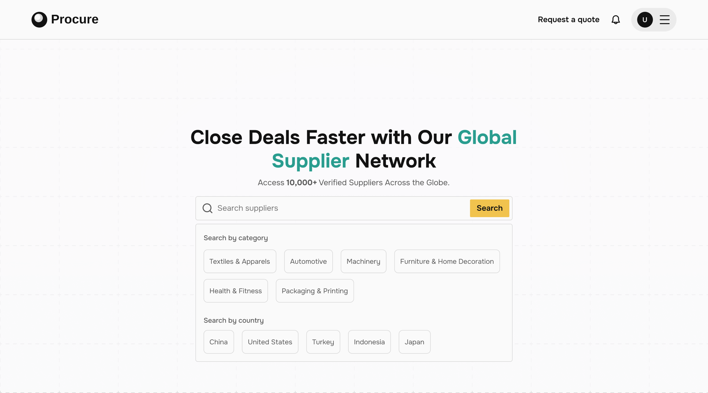
Heroshe originally helped customers ship items internationally, but many customers needed support earlier in the buying journey. Before they could ship, they had to find reliable suppliers, compare options, verify credibility, and complete purchase requests.
This process was often fragmented and manual. Customers searched across scattered platforms and still depended heavily on internal support to make decisions or complete purchases. For the team, this created delays, repeated follow-ups, and operational pressure.
Procure 1.0 was introduced as a standalone supplier database to reduce this friction. It allowed businesses to search for suppliers by industry, location, and product type, helping them find relevant options faster and with less uncertainty.
Procure 1.0 improved supplier discovery, but it also revealed a larger product opportunity. Users were not only trying to find suppliers; they needed confidence, support, and a way to complete sourcing requests without moving between disconnected tools.
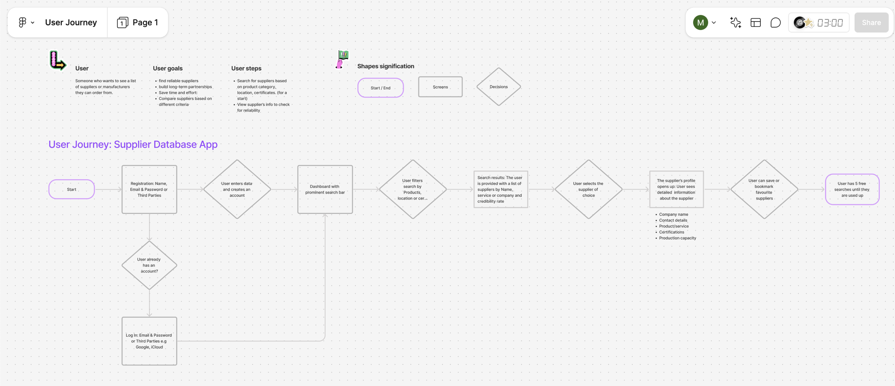
Customer Friction: users had to move between supplier discovery, assisted sourcing, and shipping.
Operational Friction: assisted sourcing depended heavily on manual internal coordination.
Business Opportunity: agent-assisted sourcing could create a new revenue stream through commission-based fulfillment.
From a standalone supplier database to a connected sourcing and fulfillment workflow.
I worked as part of the design team, translating the product direction into customer-facing and internal workflows across Store List, Buy for Me, and Agent Fulfillment.
Mapped product flows
Defined how customers would move from supplier discovery to assisted sourcing and fulfillment.
Designed key interfaces
Created screens for supplier browsing, request submission, request tracking, and internal fulfillment management.
Collaborated cross-functionally
Worked with product, design, engineering, operations, and leadership to align the experience with business and operational needs.
Through user feedback, internal analysis, and product workshops, we identified that the product needed to support two types of users: customers who wanted to search independently and customers who needed hands-on sourcing support.
Decision 1: Integrate supplier discovery into the existing Heroshe ecosystem
This reduced platform switching and allowed sourcing and shipping to sit within one journey.
Decision 2: Separate self-serve discovery from assisted sourcing
Not every user needed an agent, so Store List served users who wanted to browse while Buy for Me supported users who needed help purchasing.
Decision 3: Design the internal agent workflow, not just the customer-facing flow
The customer experience depended on how quickly agents could receive, assign, process, and update sourcing requests.
Store List
Store List brought supplier discovery into the Heroshe platform. Users could search, compare, and review suppliers without treating sourcing as a separate activity from shipping.
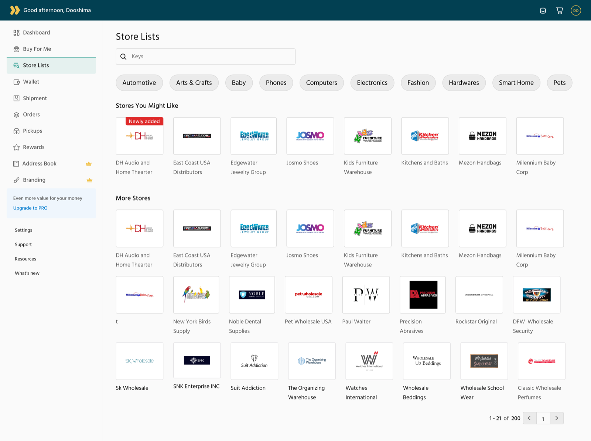
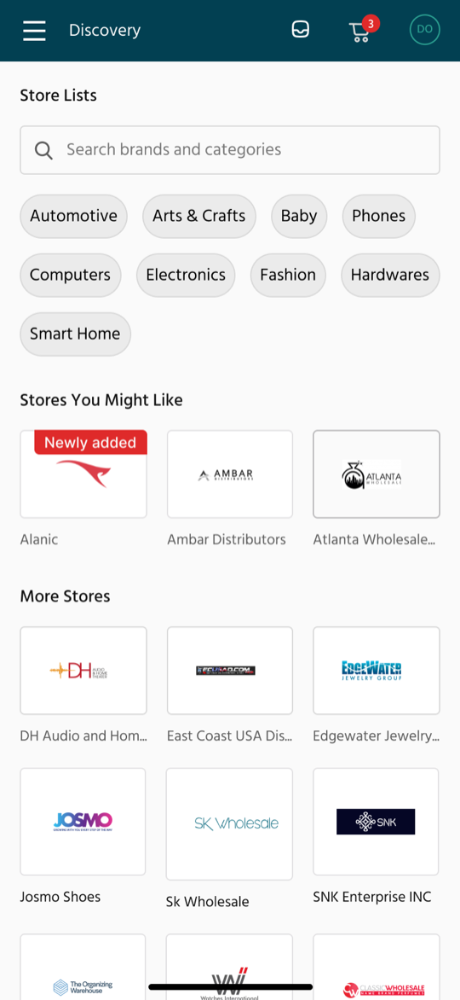
Buy for Me
Buy for Me supported users who wanted hands-on sourcing help. Instead of sending scattered requests through informal channels, customers could submit product details, view their requests, and track progress from one place.
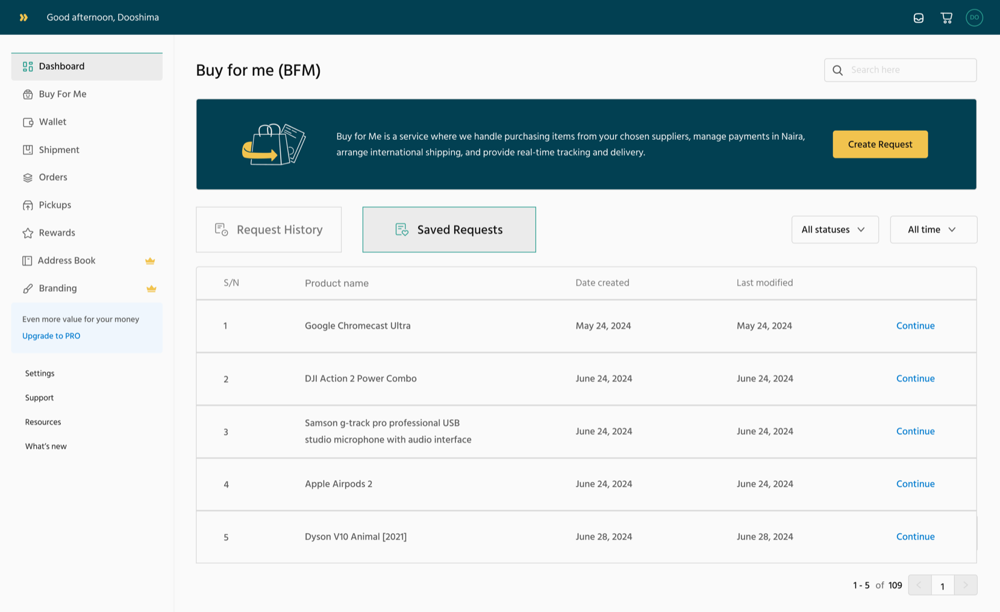
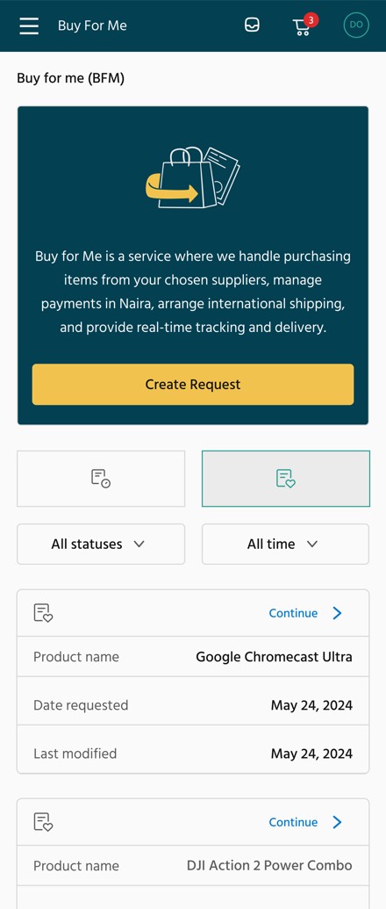
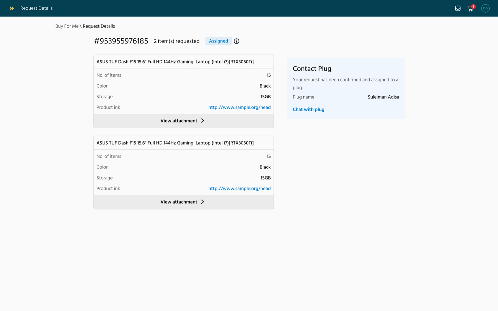
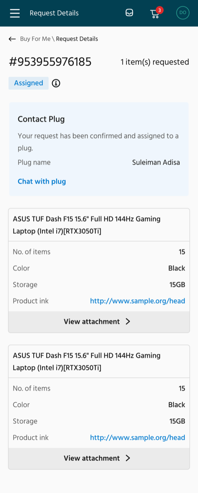
Agent Fulfillment System
The agent fulfillment system helped internal teams manage sourcing requests more clearly. Agents could view requests, self-assign orders, update progress, and reduce delays caused by manual coordination.
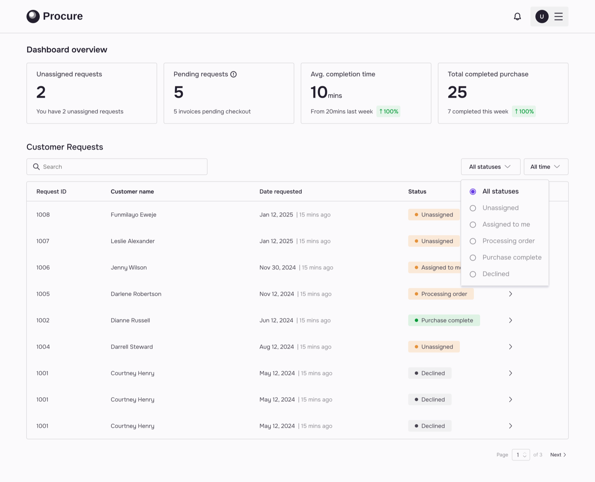
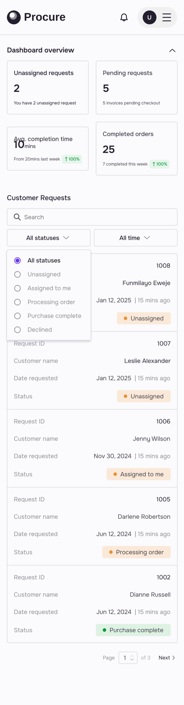
Procure 2.0 helped turn supplier discovery from a standalone search tool into a more complete sourcing and fulfillment experience.
52% faster sourcing
Reduced the time customers spent searching across scattered supplier platforms.
3–5 day processing time
Improved assisted sourcing turnaround from 7–10 days.
25% increase in order volume
Supported more sourcing requests through a clearer fulfillment workflow.
1 connected sourcing flow
Customers could discover suppliers, request assistance, and track progress in one place.
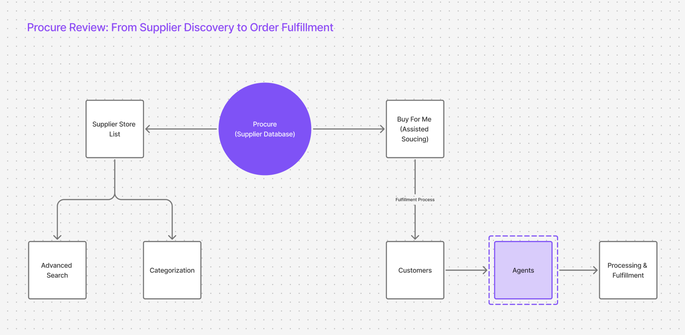
This project strengthened how I think about product ecosystems. The design challenge was not only to help customers find suppliers faster, but to connect discovery, assisted buying, internal operations, and fulfillment into one workflow.
The biggest lesson: in sourcing products, the internal workflow is part of the customer experience. If agents cannot process requests clearly, the customer experience eventually breaks.
Heroshe
A brand and product storytelling website for a business in transition.
Designed and built a Webflow website to communicate Heroshe’s move beyond shipping into sourcing, commerce, and logistics.
View Case Study